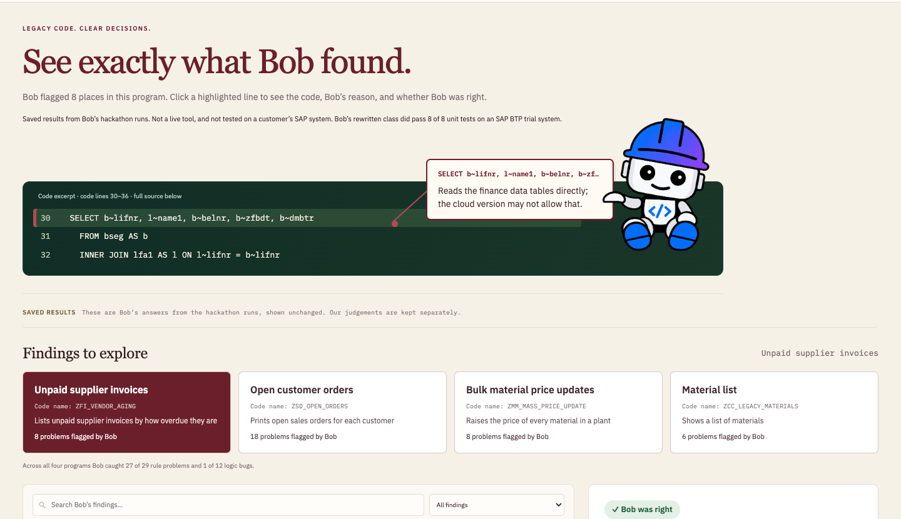
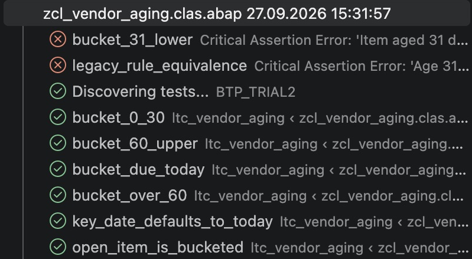

IBM Bob 2.0 Hackathon
Can IBM Bob review
old SAP code?
We tested it against problems we planted in advance.
Then we broke its code on purpose.

Clean Core Copilot · Sena Köseclean-core-copilot.vercel.app
We tested it against problems we planted in advance.
Then we broke its code on purpose.
SAP ends mainstream maintenance for ECC 6.0. Picture the one ABAP developer at a mid-size manufacturer with 600 custom programs to review by hand.
Pick a program, see what Bob found and whether Bob was right. No login.
clean-core-copilot.vercel.app
Strong on the rules. Weak on business logic, so a person still checks that.
SAP BTP trial · stand-in tables · Bob’s 7 tests + 1 team-added test (431 cases)
CONSTANTS c_threshold_30
TYPE i VALUE 31.
Left: the planted change in Bob’s class. Right: ABAP Unit results, 2 failed, 6 passed. Reverted afterwards: 8 of 8.
Bob accelerates the review.People make the decisions.Tests check the result.